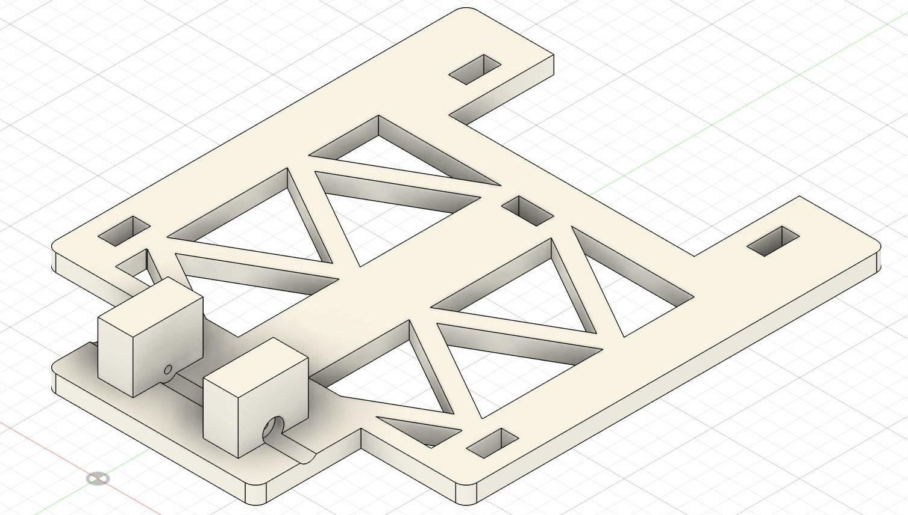
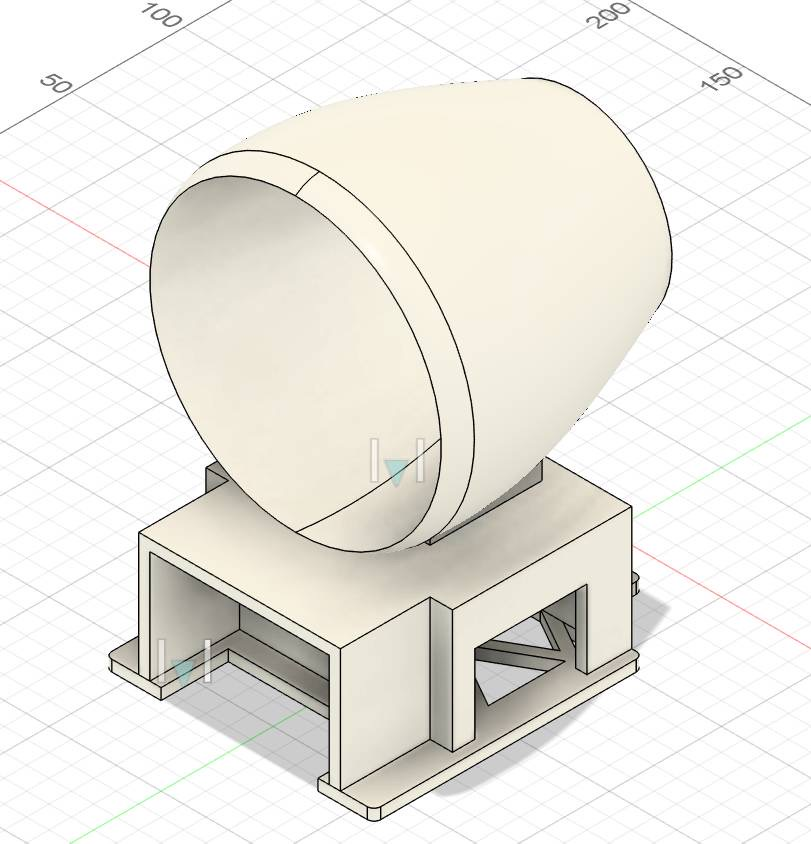
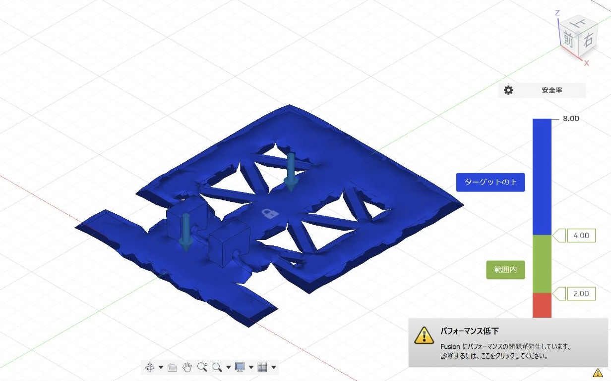

創成プロジェクト発表 A1班
制約を超えろ。次世代モビリティの創造。
軽量、低コスト、そして成功率90%以上を目指す高精度な自律走行を実現する。
軽量、低コスト、そして成功率90%以上を目指す高精度な自律走行を実現する。
車体の軽量化を追求する。
低コストでモビリティの実現を目指す。
厳密な制御により、安定した動作性を確保する。
目標達成に必須な装備のみに絞り込む。
マイクロコンピュータを活用して、全ての課題を達成する。
既存部品の再利用を通じて、SDGs目標達成に貢献する。
デモンストレーションにおいて成功率90%以上の達成を目指す。
車体の安定動作と複雑な反転・旋回機構を、マイクロコンピュータ制御で実現しています。サーボモータを駆動し車体を正確に180°回転させることが、成功の鍵となります。当初はファン駆動でしたが、ファン駆動では十分な推力が得ることが難しく、二輪駆動タイヤ方式へと方針を変更しました。
当初はファン駆動の車体を製作することを検討していましたが、途中で大きく方針転換しました。
プロジェクト開始にあたり、車体構造の基礎設計を行い、台車部分と全体の構成図を作成しました。
 設計した各部品の強度計算を実施し、ファン駆動における動作環境での耐久性を検証しました。
ファン駆動に必要な推力を確保できるかを確認するテストを実施しました。
ここで大きく方針転換
→ ファン駆動では十分な推進力を得ることが難しく、タイヤ駆動に変更した。
タイヤ駆動に対応するため、回路の設計と配線を行いました。


C言語プログラムを核として、マイクロコンピュータを用いてサーボモータの正確な旋回と反転動作を制御するプログラムの実装と調整を進めています。
初期フェーズ①で設計した車体をさらに改良しました。サーボモータの設置位置・前輪タイヤの動きを考慮して再度，設計しました。

電池ケースの不具合により、単3電池6本から9V電池への変更を行いました。これによりサーボモータとマイコンの安定動作を確保することができます。
マイコンの配線に色分けを施すことで、回路の視認性を高め、再設計や修正が容易になった。
マイコンとサーボモータを同一の起電力で動作させ、モータのみ別系統とすることで、電力の過不足による誤動作を防止した。